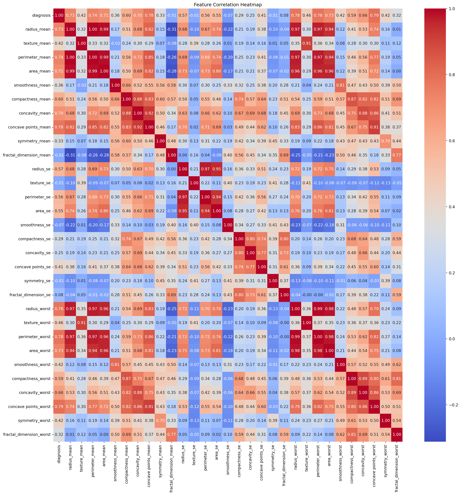
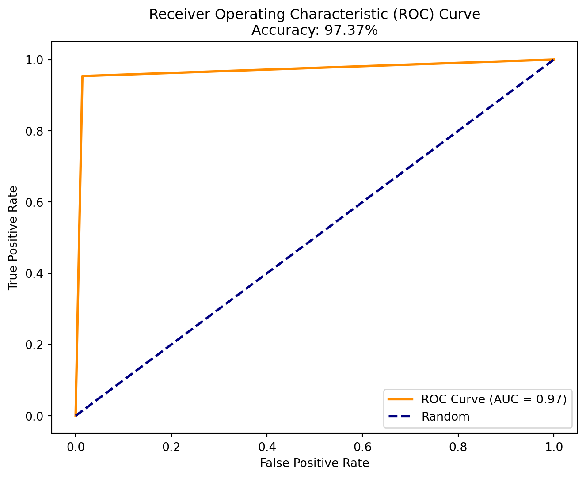

import pandas as ___
import numpy as ___
import seaborn as ___
import matplotlib.pyplot as ___
# Import from sklearn
from sklearn.model_selection import __________
from sklearn.preprocessing import __________
from sklearn.linear_model import __________
from sklearn.metrics import accuracy_score, roc_curve, aucPython Machine Learning Demo
Links
Cancer Dataset
Download Follow Along File
Getting Started
Before doing anything else, we should first activate the conda environment we want to use.Refresher: How to activate conda environment
From terminal, type:
> conda activate ENVNAME
When in VS code, you might get a popup message like the one below, confirming that the environment was activated:
Selected conda environment was successfully activated, even though “(ENVNAME)” indicator may not be present in the terminal prompt.
If we want to make sure we have the packages we’ll need installed in the environment before we try to import them, we can either check on anaconda or use the terminal:
> conda list
Otherwise, we will get an error message if we try to import packages that are not installed.
Refresher: How to install packages
To install packages, we can either use the “anaconda” dashboard, or we can use the command line. Make sure your environment is active before installing packages or the packages will not be available in your environment.
To install from the command line, we open a terminal and type:
> conda install {package}
or
> pip install {package}
Step 1: Import Packages
Similar to library() in R, we’ll use import in Python. Fill in the blanks to import the necessary packages:
Click to reveal answers
import pandas as pd
import numpy as np
import seaborn as sns
import matplotlib.pyplot as plt
## import from sklearn (scikit-learn)
from sklearn.model_selection import train_test_split
from sklearn.preprocessing import StandardScaler
from sklearn.linear_model import LogisticRegression
from sklearn.metrics import accuracy_score, roc_curve, aucStep 2: Read in Data and Perform Data Cleaning
We can use the read_csv() function from the pandas package to read in the dataset.
We can use the .info() function to show some basic information about the dataset like:
* the number of rows
* number of columns
* column labels
* column type
* number of non-null values in each column
Click to reveal answers
<class 'pandas.core.frame.DataFrame'>
RangeIndex: 569 entries, 0 to 568
Data columns (total 33 columns):
# Column Non-Null Count Dtype
--- ------ -------------- -----
0 id 569 non-null int64
1 diagnosis 569 non-null object
2 radius_mean 569 non-null float64
3 texture_mean 569 non-null float64
4 perimeter_mean 569 non-null float64
5 area_mean 569 non-null float64
6 smoothness_mean 569 non-null float64
7 compactness_mean 569 non-null float64
8 concavity_mean 569 non-null float64
9 concave points_mean 569 non-null float64
10 symmetry_mean 569 non-null float64
11 fractal_dimension_mean 569 non-null float64
12 radius_se 569 non-null float64
13 texture_se 569 non-null float64
14 perimeter_se 569 non-null float64
15 area_se 569 non-null float64
16 smoothness_se 569 non-null float64
17 compactness_se 569 non-null float64
18 concavity_se 569 non-null float64
19 concave points_se 569 non-null float64
20 symmetry_se 569 non-null float64
21 fractal_dimension_se 569 non-null float64
22 radius_worst 569 non-null float64
23 texture_worst 569 non-null float64
24 perimeter_worst 569 non-null float64
25 area_worst 569 non-null float64
26 smoothness_worst 569 non-null float64
27 compactness_worst 569 non-null float64
28 concavity_worst 569 non-null float64
29 concave points_worst 569 non-null float64
30 symmetry_worst 569 non-null float64
31 fractal_dimension_worst 569 non-null float64
32 Unnamed: 32 0 non-null float64
dtypes: float64(31), int64(1), object(1)
memory usage: 146.8+ KBFrom the info, we can see that the column types make sense and most of the columns have no missing values.
We do have this extra column called “Unnamed: 32” with 0 non-null values… so let’s drop it (remove it from the dataframe).
Click to reveal answers
## `inplace` means that we modify the original dataframe
data.drop(columns="Unnamed: 32", inplace=True)
## check that the column was removed
print(data.info())<class 'pandas.core.frame.DataFrame'>
RangeIndex: 569 entries, 0 to 568
Data columns (total 32 columns):
# Column Non-Null Count Dtype
--- ------ -------------- -----
0 id 569 non-null int64
1 diagnosis 569 non-null object
2 radius_mean 569 non-null float64
3 texture_mean 569 non-null float64
4 perimeter_mean 569 non-null float64
5 area_mean 569 non-null float64
6 smoothness_mean 569 non-null float64
7 compactness_mean 569 non-null float64
8 concavity_mean 569 non-null float64
9 concave points_mean 569 non-null float64
10 symmetry_mean 569 non-null float64
11 fractal_dimension_mean 569 non-null float64
12 radius_se 569 non-null float64
13 texture_se 569 non-null float64
14 perimeter_se 569 non-null float64
15 area_se 569 non-null float64
16 smoothness_se 569 non-null float64
17 compactness_se 569 non-null float64
18 concavity_se 569 non-null float64
19 concave points_se 569 non-null float64
20 symmetry_se 569 non-null float64
21 fractal_dimension_se 569 non-null float64
22 radius_worst 569 non-null float64
23 texture_worst 569 non-null float64
24 perimeter_worst 569 non-null float64
25 area_worst 569 non-null float64
26 smoothness_worst 569 non-null float64
27 compactness_worst 569 non-null float64
28 concavity_worst 569 non-null float64
29 concave points_worst 569 non-null float64
30 symmetry_worst 569 non-null float64
31 fractal_dimension_worst 569 non-null float64
dtypes: float64(30), int64(1), object(1)
memory usage: 142.4+ KB
NoneThe column was successfully removed!
Now, we can use .head(5) to show the first 5 rows of the dataset (rows 0-4). Remember that the first row is “0” not “1”!
| id | diagnosis | radius_mean | texture_mean | perimeter_mean | area_mean | smoothness_mean | compactness_mean | concavity_mean | concave points_mean | ... | radius_worst | texture_worst | perimeter_worst | area_worst | smoothness_worst | compactness_worst | concavity_worst | concave points_worst | symmetry_worst | fractal_dimension_worst | |
|---|---|---|---|---|---|---|---|---|---|---|---|---|---|---|---|---|---|---|---|---|---|
| 0 | 842302 | M | 17.99 | 10.38 | 122.80 | 1001.0 | 0.11840 | 0.27760 | 0.3001 | 0.14710 | ... | 25.38 | 17.33 | 184.60 | 2019.0 | 0.1622 | 0.6656 | 0.7119 | 0.2654 | 0.4601 | 0.11890 |
| 1 | 842517 | M | 20.57 | 17.77 | 132.90 | 1326.0 | 0.08474 | 0.07864 | 0.0869 | 0.07017 | ... | 24.99 | 23.41 | 158.80 | 1956.0 | 0.1238 | 0.1866 | 0.2416 | 0.1860 | 0.2750 | 0.08902 |
| 2 | 84300903 | M | 19.69 | 21.25 | 130.00 | 1203.0 | 0.10960 | 0.15990 | 0.1974 | 0.12790 | ... | 23.57 | 25.53 | 152.50 | 1709.0 | 0.1444 | 0.4245 | 0.4504 | 0.2430 | 0.3613 | 0.08758 |
| 3 | 84348301 | M | 11.42 | 20.38 | 77.58 | 386.1 | 0.14250 | 0.28390 | 0.2414 | 0.10520 | ... | 14.91 | 26.50 | 98.87 | 567.7 | 0.2098 | 0.8663 | 0.6869 | 0.2575 | 0.6638 | 0.17300 |
| 4 | 84358402 | M | 20.29 | 14.34 | 135.10 | 1297.0 | 0.10030 | 0.13280 | 0.1980 | 0.10430 | ... | 22.54 | 16.67 | 152.20 | 1575.0 | 0.1374 | 0.2050 | 0.4000 | 0.1625 | 0.2364 | 0.07678 |
5 rows × 32 columns
Recoding a Variable
For our logistic regression, the diagnosis column, which is our outcome of interest, should be 0, 1 not B, M. To fix this, we can use a dictionary and .map().
Click to reveal answers
## define a dictionary
y_recode = {"B": 0, "M": 1}
## use .map() to locate the keys in the column and replace with values
## B becomes 0, M becomes 1
data["diagnosis"] = data["diagnosis"].map(y_recode)
data.head(5)| id | diagnosis | radius_mean | texture_mean | perimeter_mean | area_mean | smoothness_mean | compactness_mean | concavity_mean | concave points_mean | ... | radius_worst | texture_worst | perimeter_worst | area_worst | smoothness_worst | compactness_worst | concavity_worst | concave points_worst | symmetry_worst | fractal_dimension_worst | |
|---|---|---|---|---|---|---|---|---|---|---|---|---|---|---|---|---|---|---|---|---|---|
| 0 | 842302 | 1 | 17.99 | 10.38 | 122.80 | 1001.0 | 0.11840 | 0.27760 | 0.3001 | 0.14710 | ... | 25.38 | 17.33 | 184.60 | 2019.0 | 0.1622 | 0.6656 | 0.7119 | 0.2654 | 0.4601 | 0.11890 |
| 1 | 842517 | 1 | 20.57 | 17.77 | 132.90 | 1326.0 | 0.08474 | 0.07864 | 0.0869 | 0.07017 | ... | 24.99 | 23.41 | 158.80 | 1956.0 | 0.1238 | 0.1866 | 0.2416 | 0.1860 | 0.2750 | 0.08902 |
| 2 | 84300903 | 1 | 19.69 | 21.25 | 130.00 | 1203.0 | 0.10960 | 0.15990 | 0.1974 | 0.12790 | ... | 23.57 | 25.53 | 152.50 | 1709.0 | 0.1444 | 0.4245 | 0.4504 | 0.2430 | 0.3613 | 0.08758 |
| 3 | 84348301 | 1 | 11.42 | 20.38 | 77.58 | 386.1 | 0.14250 | 0.28390 | 0.2414 | 0.10520 | ... | 14.91 | 26.50 | 98.87 | 567.7 | 0.2098 | 0.8663 | 0.6869 | 0.2575 | 0.6638 | 0.17300 |
| 4 | 84358402 | 1 | 20.29 | 14.34 | 135.10 | 1297.0 | 0.10030 | 0.13280 | 0.1980 | 0.10430 | ... | 22.54 | 16.67 | 152.20 | 1575.0 | 0.1374 | 0.2050 | 0.4000 | 0.1625 | 0.2364 | 0.07678 |
5 rows × 32 columns
Step 3: Exploratory Data Analysis
Now that our data is cleaned and we have our outcome in numeric form, we can use .describe() to get summary statistics for each column of the dataset.
Click to reveal answers
| id | diagnosis | radius_mean | texture_mean | perimeter_mean | area_mean | smoothness_mean | compactness_mean | concavity_mean | concave points_mean | ... | radius_worst | texture_worst | perimeter_worst | area_worst | smoothness_worst | compactness_worst | concavity_worst | concave points_worst | symmetry_worst | fractal_dimension_worst | |
|---|---|---|---|---|---|---|---|---|---|---|---|---|---|---|---|---|---|---|---|---|---|
| count | 5.690000e+02 | 569.000000 | 569.000000 | 569.000000 | 569.000000 | 569.000000 | 569.000000 | 569.000000 | 569.000000 | 569.000000 | ... | 569.000000 | 569.000000 | 569.000000 | 569.000000 | 569.000000 | 569.000000 | 569.000000 | 569.000000 | 569.000000 | 569.000000 |
| mean | 3.037183e+07 | 0.372583 | 14.127292 | 19.289649 | 91.969033 | 654.889104 | 0.096360 | 0.104341 | 0.088799 | 0.048919 | ... | 16.269190 | 25.677223 | 107.261213 | 880.583128 | 0.132369 | 0.254265 | 0.272188 | 0.114606 | 0.290076 | 0.083946 |
| std | 1.250206e+08 | 0.483918 | 3.524049 | 4.301036 | 24.298981 | 351.914129 | 0.014064 | 0.052813 | 0.079720 | 0.038803 | ... | 4.833242 | 6.146258 | 33.602542 | 569.356993 | 0.022832 | 0.157336 | 0.208624 | 0.065732 | 0.061867 | 0.018061 |
| min | 8.670000e+03 | 0.000000 | 6.981000 | 9.710000 | 43.790000 | 143.500000 | 0.052630 | 0.019380 | 0.000000 | 0.000000 | ... | 7.930000 | 12.020000 | 50.410000 | 185.200000 | 0.071170 | 0.027290 | 0.000000 | 0.000000 | 0.156500 | 0.055040 |
| 25% | 8.692180e+05 | 0.000000 | 11.700000 | 16.170000 | 75.170000 | 420.300000 | 0.086370 | 0.064920 | 0.029560 | 0.020310 | ... | 13.010000 | 21.080000 | 84.110000 | 515.300000 | 0.116600 | 0.147200 | 0.114500 | 0.064930 | 0.250400 | 0.071460 |
| 50% | 9.060240e+05 | 0.000000 | 13.370000 | 18.840000 | 86.240000 | 551.100000 | 0.095870 | 0.092630 | 0.061540 | 0.033500 | ... | 14.970000 | 25.410000 | 97.660000 | 686.500000 | 0.131300 | 0.211900 | 0.226700 | 0.099930 | 0.282200 | 0.080040 |
| 75% | 8.813129e+06 | 1.000000 | 15.780000 | 21.800000 | 104.100000 | 782.700000 | 0.105300 | 0.130400 | 0.130700 | 0.074000 | ... | 18.790000 | 29.720000 | 125.400000 | 1084.000000 | 0.146000 | 0.339100 | 0.382900 | 0.161400 | 0.317900 | 0.092080 |
| max | 9.113205e+08 | 1.000000 | 28.110000 | 39.280000 | 188.500000 | 2501.000000 | 0.163400 | 0.345400 | 0.426800 | 0.201200 | ... | 36.040000 | 49.540000 | 251.200000 | 4254.000000 | 0.222600 | 1.058000 | 1.252000 | 0.291000 | 0.663800 | 0.207500 |
8 rows × 32 columns
The count column tells us the number of non-null (non-missing) values in a column.
Creating Descriptive Plots
We can also look at the number of each diagnosis reflected in the dataset in a plot using seaborn.
You can also save a plot to a variable (ex: ‘p’) if you want to display it later with plt.show(p).
:::
:::
To change the colors of our plot, we can make a dictionary with the values of 'diagnosis' as keys and the hexcodes of the colors we want to use as values.
We can get the hex codes of colors from a seaborn palette using `sns.color_palette().as_hex()`.
::: {#25c76f24 .cell message='false' execution_count=17}
``` {.python .cell-code}
color_hex = sns.color_palette("colorblind")._____
print("The hexcodes for the 'colorblind' palette are:\n", ____)
## if we want to make the columns green for benign and yellow for malignant
## the "-" lets us index from the end of the list rather than the front. However, the '-1'th position is the last position (there is no '-0')
colors = {0: color_hex[__], 1: color_hex[__]}:::
Click to reveal answers
color_hex = sns.color_palette("colorblind").as_hex()
print("The hexcodes for the 'colorblind' palette are:\n", color_hex)
## if we want to make the columns green for benign and yellow for malignant
## the "-" lets us index from the end of the list rather than the front.However, the '-1'th position is the last position (there is no '-0')
colors = {0: color_hex[2], 1: color_hex[-2]}The hexcodes for the 'colorblind' palette are:
['#0173b2', '#de8f05', '#029e73', '#d55e00', '#cc78bc', '#ca9161', '#fbafe4', '#949494', '#ece133', '#56b4e9']We then create the plot and tell seaborn to use ‘colors’ as the palette for the graph. We can also change the ‘stat’ to be “percent”, which can be more interpretable than raw counts.
We can also change the xtick labels to be “Benign” and “Malignant” instead of “0” and “1”. Because we assigned the plot to the variable ‘p’, we can use p.{} to change attributes of plot ‘p’.
We will also change the axis labels and set a title. Once we make these changes, we can show the finished plot.
p = sns.countplot(
x="___",
hue="___",
stat="___",
data=data,
palette=colors,
legend=False,
)
## change the xticklabels to benign and malignant
p.set_xticks([0, 1])
p.set_xticklabels(["___", ""])
## change the axes labels and title
p.set(xlabel="___", ylabel="___", title="Distribution of Diagnoses")
## add legend
plt.legend(title="Diagnosis", loc="upper right", labels=["Benign", "Malignant"])
## show plot
plt.show(p)Click to reveal answers
p = sns.countplot(
x="diagnosis",
hue="diagnosis",
stat="percent",
data=data,
palette=colors,
legend=False,
)
## change the xticklabels to benign and malignant
p.set_xticks([0, 1])
p.set_xticklabels(["Benign", "Malignant"])
## change the axes labels and title
p.set(xlabel="Diagnosis", ylabel="Percent", title="Distribution of Diagnoses")
## add legend
plt.legend(title="Diagnosis", loc="upper right", labels=["Benign", "Malignant"])
## show plot
plt.show(p)
If we wanted to, we could also make a correlation heatmap of our features using .corr() and sns.heatmap().
For this, all of our columns must be numeric, and we should remove the ‘id’ column as it is not useful for correlation. We use .select_dtypes() to select only the numeric columns from the dataset.
numeric_data = data.select_dtypes(include=___)
## drop id column
numeric_data.drop(columns=___, inplace=___)
## set figure size
plt.figure(figsize=(20, 20))
## use corr function and seaborn heatmap to create correlation heatmap
## 'fmt' allows us to choose the number display format for the heatmap
sns.heatmap(numeric_data.___, annot=True, fmt=".2f", cmap="coolwarm")
## set plot title and show plot
plt.title("Feature Correlation Heatmap")
plt.___Click to reveal answers
numeric_data = data.select_dtypes(include=[np.number])
## drop id column
numeric_data.drop(columns="id", inplace=True)
## set figure size
plt.figure(figsize=(20, 20))
## use corr function and seaborn heatmap to create correlation heatmap
## 'fmt' allows us to choose the number display format for the heatmap
sns.heatmap(numeric_data.corr(), annot=True, fmt=".2f", cmap="coolwarm")
## set plot title and show plot
plt.title("Feature Correlation Heatmap")
plt.show()Step 4: Data Setup
Splitting Training and Test Data
We first need to split the dataset into X (predictors/features) and y (outcomes). Then we use the train_test_split() function to split these datasets into a training dataset and a test dataset.
We use the .loc function and “:” to select all rows and any columns including and after “radius_mean”, and we assign these columns to x. This excludes the “diagnosis” and “id” columns.
We set y as simply the diagnosis column.
When splitting our dataset, we can define ‘test_size’ which is the proportion of the data that will be set aside for testing the model. We can also set a random_state.
Unlike R, Python allows for multi-argument returns from functions. This lets us assign each returned object to a different variable to be used later!
x = data.loc[:, "___"::]
## set only the diagnosis column as "y"
y = data.loc[:, "___"]
## here we assign each object returned from `train_test_split` to a different variable
## we can use test_size to set the proportion of the dataset reserved for testing
X_?, X_?, y_?, y_? = train_test_split(
x, y, test_size=0.2, random_state=42
)
X_train.head(3)Click to reveal answers
x = data.loc[:, "radius_mean"::]
## set only the diagnosis column as "y"
y = data.loc[:, "diagnosis"]
## here we assign each object returned from `train_test_split` to a different variable
X_train, X_test, y_train, y_test = train_test_split(
x, y, test_size=0.2, random_state=42
)
X_train.head(3)| radius_mean | texture_mean | perimeter_mean | area_mean | smoothness_mean | compactness_mean | concavity_mean | concave points_mean | symmetry_mean | fractal_dimension_mean | ... | radius_worst | texture_worst | perimeter_worst | area_worst | smoothness_worst | compactness_worst | concavity_worst | concave points_worst | symmetry_worst | fractal_dimension_worst | |
|---|---|---|---|---|---|---|---|---|---|---|---|---|---|---|---|---|---|---|---|---|---|
| 68 | 9.029 | 17.33 | 58.79 | 250.5 | 0.10660 | 0.14130 | 0.31300 | 0.04375 | 0.2111 | 0.08046 | ... | 10.31 | 22.65 | 65.50 | 324.7 | 0.14820 | 0.4365 | 1.2520 | 0.17500 | 0.4228 | 0.1175 |
| 181 | 21.090 | 26.57 | 142.70 | 1311.0 | 0.11410 | 0.28320 | 0.24870 | 0.14960 | 0.2395 | 0.07398 | ... | 26.68 | 33.48 | 176.50 | 2089.0 | 0.14910 | 0.7584 | 0.6780 | 0.29030 | 0.4098 | 0.1284 |
| 63 | 9.173 | 13.86 | 59.20 | 260.9 | 0.07721 | 0.08751 | 0.05988 | 0.02180 | 0.2341 | 0.06963 | ... | 10.01 | 19.23 | 65.59 | 310.1 | 0.09836 | 0.1678 | 0.1397 | 0.05087 | 0.3282 | 0.0849 |
3 rows × 30 columns
Scaling/Normalizing Data
Because all of our features have different scales, we need to standardize (normalize) our dataset. We can do this by creating an instance of the StandardScaler class called “scaler” and fitting that to the training data. We then use the same “scaler” to scale the test dataset.
Step 5: Model Setup
Next we have to set up the model itself by creating an instance of the LogisticRegression model class.
Then, we can fit this model to the training data.
Click to reveal answers
Step 6: Look At Results
Once the model is fit, we can use it to predict the outcome (diagnosis) based on the features of the test data.
Store Results in a Dataframe
We can use pd.DataFrame() to create an empty pandas dataframe that we can fill with our results.
## use model to predict test data
## set up dataframe to review results
results = pd.___
## get predicted
results.loc[:, 'Predicted']= lr.___(___)
## get true y values for test dataset
results.loc[:, 'Truth'] = ___.___
## get probability of being malignant
## the output is one probability per outcome, we only want the second outcome (malignant)
results.loc[:, 'Probability: Malignant'] = pd.DataFrame(lr.___(X_test))[_]
#results_recode = {0: "B", 1:"M"}
#results.replace({"Predicted": results_recode, 'Truth': results_recode}, inplace = True)
results.head(5)Click to reveal answers
## use model to predict test data
## set up dataframe to review results
results = pd.DataFrame()
## get predicted
results.loc[:, 'Predicted']= lr.predict(X_test)
## get true y values for test dataset
results.loc[:, 'Truth'] = y_test.values
## get probability of being malignant
## the output is one probability per outcome, we only want the second outcome (malignant). The second outcome uses index 1
results.loc[:, 'Probability: Malignant'] = pd.DataFrame(lr.predict_proba(X_test))[1]
#results_recode = {0: "B", 1:"M"}
#results.replace({"Predicted": results_recode, 'Truth': results_recode}, inplace = True)
results.head(5)| Predicted | Truth | Probability: Malignant | |
|---|---|---|---|
| 0 | 0 | 0 | 0.114327 |
| 1 | 1 | 1 | 0.999991 |
| 2 | 1 | 1 | 0.996902 |
| 3 | 0 | 0 | 0.000511 |
| 4 | 0 | 0 | 0.000061 |
We can also get a quantitative “accuracy score” that will give us an idea of how well our model predicts our outcomes.
Create ROC curve
As a figure, we can create an ROC curve and use quarto chunk options to add a figure caption.
## make a plot to vizualize the ROC curve
## get false pos rate, true pos rate and thresholds
## there are 3 outputs so we need 3 variables to catch them
___, ___, ___ = roc_curve(results["Truth"], results["Predicted"])
## get AUC data
roc_auc = auc(___, ___)
## set up plot
plt.figure(figsize=(8, 6))
## using matplotlib this time, create line plot with 2pt line weight
## add "ROC Curve (AUC = AUC)" as label for orange line
## .2f is for display formatting, lw is linewidth
plt.plot(fpr, tpr, color="darkorange", lw=2, label=f"ROC Curve (AUC = {roc_auc:.2f})")
## create another curve, this time blue with a dashed line labeled "Random"
## as in random chance.
plt.plot(___, ___, color="navy", lw=2, linestyle="--", label="Random")
## add xlabel, ylabel and title
plt.xlabel("False Positive Rate")
plt.ylabel("True Positive Rate")
plt.title(
"Receiver Operating Characteristic (ROC) Curve\nAccuracy: {:.2f}%".format(
accuracy * 100
)
)
## add legend and show plot
plt.legend(loc="lower right")
plt.show()Click to reveal answers
## make a plot to vizualize the ROC curve
## get false pos rate, true pos rate and thresholds
fpr, tpr, thresholds = roc_curve(results["Truth"], results["Predicted"])
## get AUC data
roc_auc = auc(fpr, tpr)
## set up plot
plt.figure(figsize=(8, 6))
## using matplotlib this time, create line plot with 2pt line weight
## add "ROC Curve (AUC = AUC)" as label for orange line
## .2f is for display formatting, lw is linewidth
plt.plot(fpr, tpr, color="darkorange", lw=2, label=f"ROC Curve (AUC = {roc_auc:.2f})")
## create another curve, this time blue with a dashed line labeled "Random"
## as in random chance
plt.plot([0, 1], [0, 1], color="navy", lw=2, linestyle="--", label="Random")
## add xlabel, ylabel and title
plt.xlabel("False Positive Rate")
plt.ylabel("True Positive Rate")
plt.title(
"Receiver Operating Characteristic (ROC) Curve\nAccuracy: {:.2f}%".format(
accuracy * 100
)
)
## add legend and show plot
plt.legend(loc="lower right")
plt.show()
Congratulations! You have successfully done logistic regression in Python!